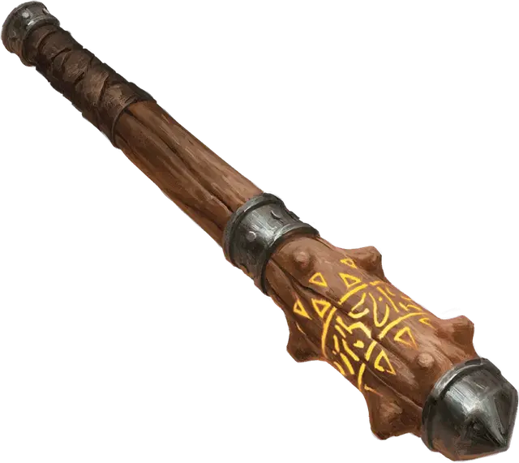

Громыхающая палица
Thunderous Greatclub
Оружие (Палица), очень редкое (требуется настройка)

Рекомендованная стоимость 40 000 ЗМ
Пока вы настроены на это магическое оружие, ваше значение Силы равно 20, если только оно уже не превышает это значение. Оружие наносит 1к8 дополнительного урона Звуком, когда попадает по существу, и 3к8 дополнительного урона Звуком, когда попадает по объекту, который никто не несёт и не носит.
Оружие обладает следующими дополнительными свойствами.
Раскат грома. Действием Магия вы можете ударить оружием о твёрдую поверхность, вызывая громкий раскат грома, слышимый на расстоянии до 300 футов. При этом вы также создаете 30-футовый Конус громовой энергии. Каждое существо в Конусе должно преуспеть в спасброске Силы Сл 15, иначе получит состояние Опрокинутый. Каждый немагический объект в Конусе, который никто не несёт и не носит, получают 3к8 урона Звуком.
Землетрясение. Действием Магия вы можете ударить оружием о землю, вызывая сильное сейсмическое возмущение в круге радиусом 50 футов, центр которого находится в точке удара. Соприкасающиеся с землёй в этой области здания получают 50 Дробящего урона, а каждое существо на земле в этой области должно преуспеть в спасброске Ловкости Сл 20, иначе получает состояние Опрокинутый. Если существо при этом поддерживает Концентрацию, оно должно также преуспеть в спасброске Телосложения Сл 20, иначе Концентрация прерывается. Кроме того, вы можете вызвать открытие расщелины глубиной 30 футов и шириной 10 футов в любом месте в пределах области. Любое существо, оказавшееся на месте, где открывается расщелина, должно преуспеть в спасброске Ловкости Сл 20 — при провале оно падает в расщелину, а при успехе перемещается вместе с её краем, не падая. Любое здание, стоящее там, где открывается расщелина, обрушивается в неё. Как только это свойство использовано, его нельзя использовать снова до следующего рассвета.